Asakusa is Tokyo's street food capital. The 250-meter Nakamise-dori shopping street leading to Senso-ji temple is lined with stalls selling everything from crispy senbei to giant melon pan. But the best eats? Those are often around the corner, behind the temple, or down the backstreets that tourists walk right past.
We combed through hundreds of Reddit posts from r/JapanTravelTips, r/JapanTravel, and r/Tokyo to find the street food spots that actual visitors rave about — the ones worth queuing for, and the hidden gems nobody photographs.
📊 How we built this list
We analyzed 120+ Reddit posts and 800+ comments across r/JapanTravelTips, r/JapanTravel, r/Tokyo, and r/JapaneseFood — spanning 2019 to 2025. Spots were ranked by how often they appeared in independent recommendations. We included both the famous Nakamise-dori classics and the hidden gems found only in the backstreets.
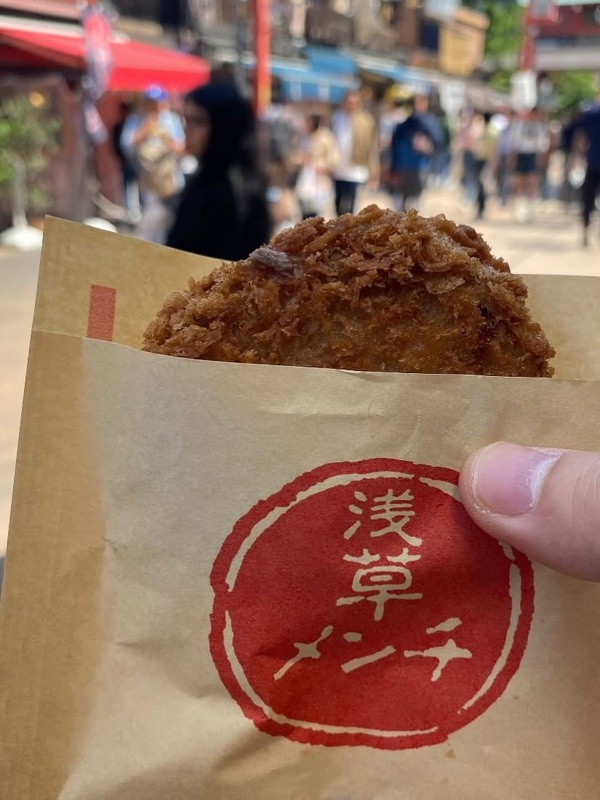
What to order: The menchi katsu — a deep-fried breaded meat patty, crispy outside and juicy inside. They only sell one thing, so ordering is easy. Eat it hot.
"Also behind the temple is Asakusa menchi katsu which is fire. They only sell one thing so the long line moves very quickly."
— r/JapanTravelTips · Tokyo street food alternatives thread
"Highly recommend visiting this street food spot. It's called Asakusa Menchi Taito. Place is always packed with people."
— r/Tokyo · Asakusa eats thread
tabiji verdict: The single most recommended Asakusa street food item on Reddit. One product, done perfectly — crispy, juicy menchi katsu for ¥300. The line looks long but moves fast because they only sell one thing. Don't skip this.
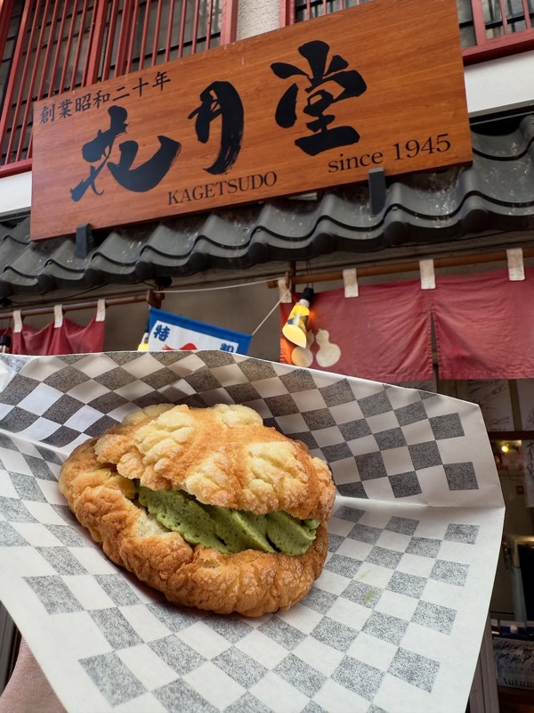
What to order: The jumbo melon pan — a giant, crispy-on-the-outside, fluffy-on-the-inside sweet bread. Get it fresh and hot. Their ice cream melon pan sandwich is the summer upgrade.
"Street food or snack: naruto taiyaki, kagetsudo melonpan and shaved ice... we have visited Japan over 20 times in the past 10-12 years and Asakusa is one of the top 2 places to stay for us."
— r/JapanTravelTips · Where to eat in Asakusa thread
tabiji verdict: The most Instagrammed snack in Asakusa — and for good reason. The jumbo melon pan is ridiculously good when fresh. Get there before noon for the shortest wait. The ice cream sandwich version in summer is next-level.
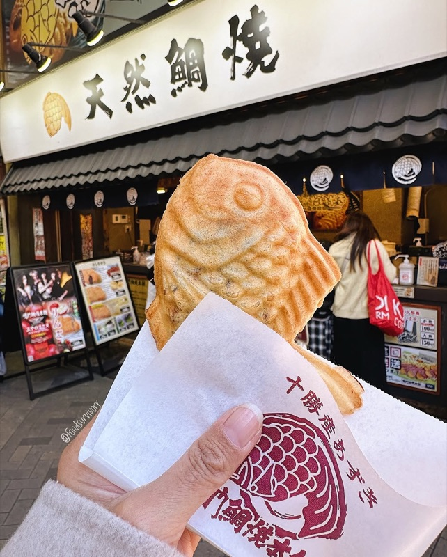
What to order: Classic anko (red bean) taiyaki — a fish-shaped pastry filled with sweet red bean paste. They make them individually in cast-iron molds for maximum crispiness.
tabiji verdict: Taiyaki is Japan's quintessential street snack, and Naruto does it old-school — individual cast-iron molds instead of the multi-mold machines most shops use. The difference in crispiness is noticeable. ¥200 for a perfect warm snack.
What to order: The classic candy apple (ringo ame) — a whole apple coated in glossy, crunchy sugar coating. Seasonal fruit variations available. The strawberry and grape versions are popular alternatives.
tabiji verdict: Glossy, photogenic, and genuinely delicious. The candy coating is thin and shatteringly crispy — not the thick, tooth-breaking kind. At ¥500–¥800 it's the priciest snack on this list, but the quality justifies it. Popular enough that people come back for seconds.
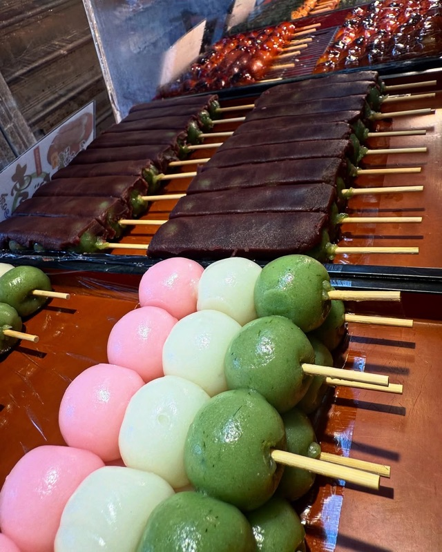
What to order: Kibi dango — small, chewy millet dumplings coated in kinako (roasted soybean powder). A set of 5 comes for around ¥350. Pair with their cold matcha.
"The kibi dango at Nakamise is one of those things that looks simple but the texture is unlike anything you've had. Chewy, nutty, and perfect with matcha."
— r/JapanTravel
tabiji verdict: Asakusa's most traditional snack — kibi dango has been sold on Nakamise-dori for over a century. The millet dumplings are warm, chewy, and dusted with kinako. Simple, ancient, and ¥350 well spent.
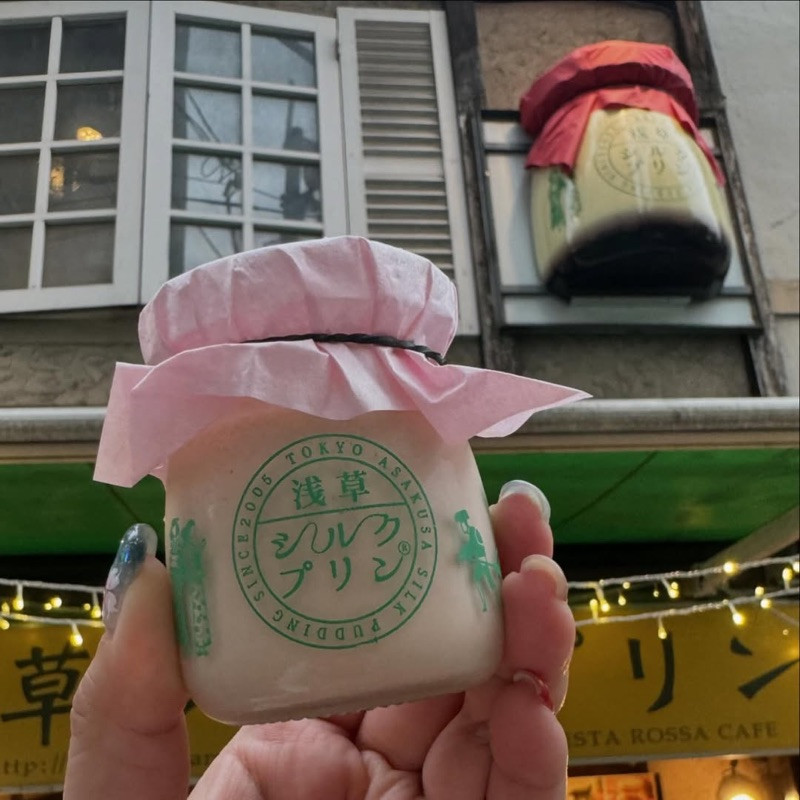
What to order: The signature silk pudding — silky smooth Japanese custard pudding (purin) in a cute jar. The texture is impossibly smooth. Seasonal flavors rotate.
tabiji verdict: Japanese purin (custard pudding) is one of the country's most underrated desserts. Asakusa Silk Pudding makes a version so smooth it melts on your tongue. The cute jar packaging makes it a great edible souvenir too.
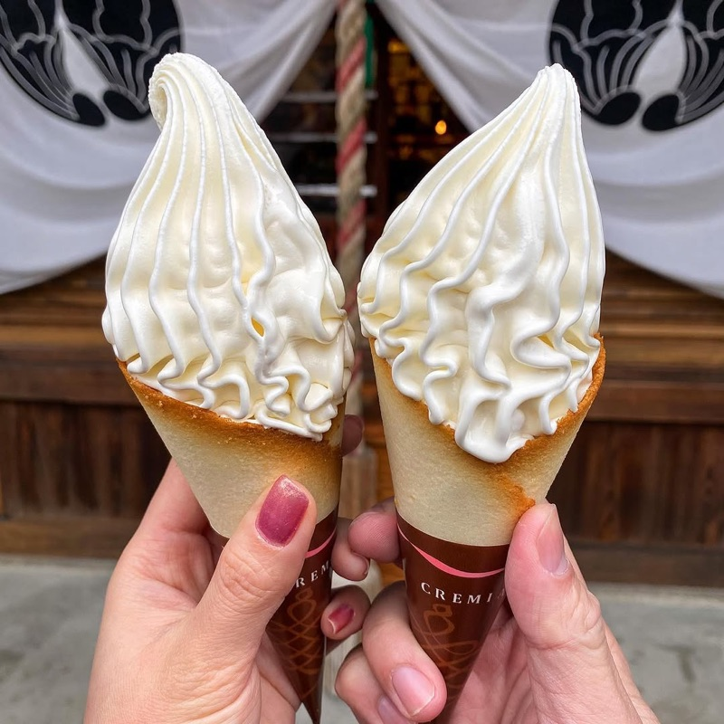
What to order: The Cremia soft serve — premium soft-serve ice cream served in a langues de chat (butter cookie) cone instead of a regular wafer. The cone alone is worth it.
tabiji verdict: Cremia has developed a cult following — the butterfat content is 12.5% (double regular soft serve) and the langues de chat cone is crispy perfection. Harder to find than it used to be, but Asakusa still has vendors. Worth seeking out.
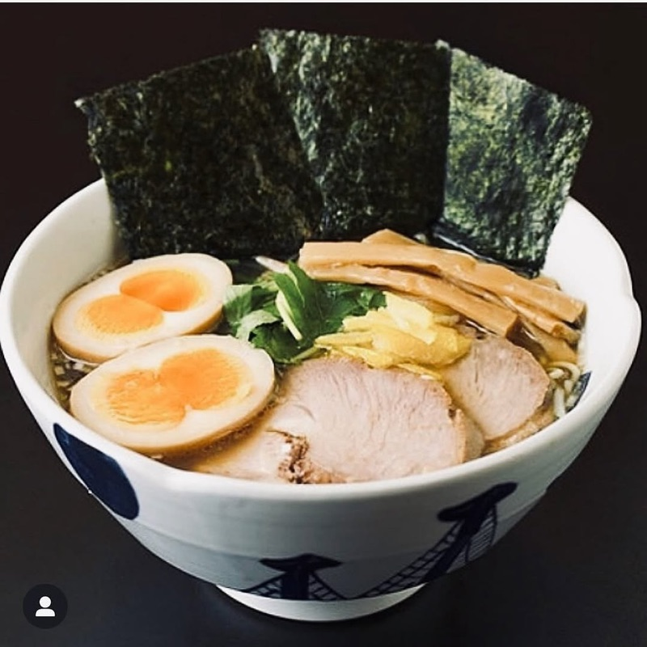
What to order: Their signature yuzu shio ramen — a clear, delicate broth with citrus notes. Light and refreshing, perfect for a break from heavy street food.
tabiji verdict: When you need a proper sit-down meal between snacks, Yoroiya is the move. Their yuzu shio ramen is light and refreshing — a nice counterpoint to all the fried and sweet street food. Consistently praised by repeat visitors.
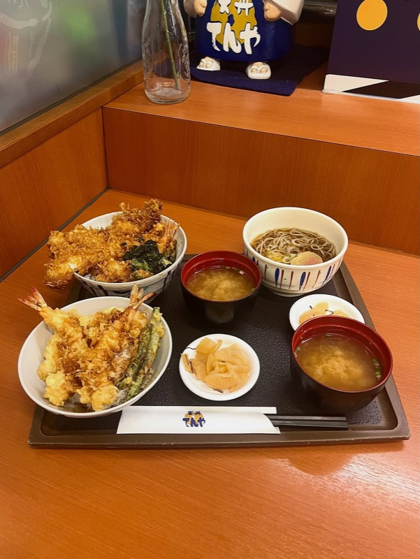
What to order: The tendon (tempura rice bowl) — shrimp and vegetable tempura over rice with sweet tare sauce. The regular tendon is under ¥600 and incredibly filling.
"I loved Tendon Tenya. Cheap chain tempura restaurant hiding in plain sight. It's not 'cool' or Instagrammable but it's so good and cheap."
— r/JapanTravelTips · Must eat in Asakusa thread · 71 upvotes
tabiji verdict: A chain? Yes. Cool? No. Delicious tendon for under ¥600? Absolutely. While tourists queue for 45 minutes at Daikokuya, locals eat equally good tempura here with no wait. The budget traveler's secret weapon.
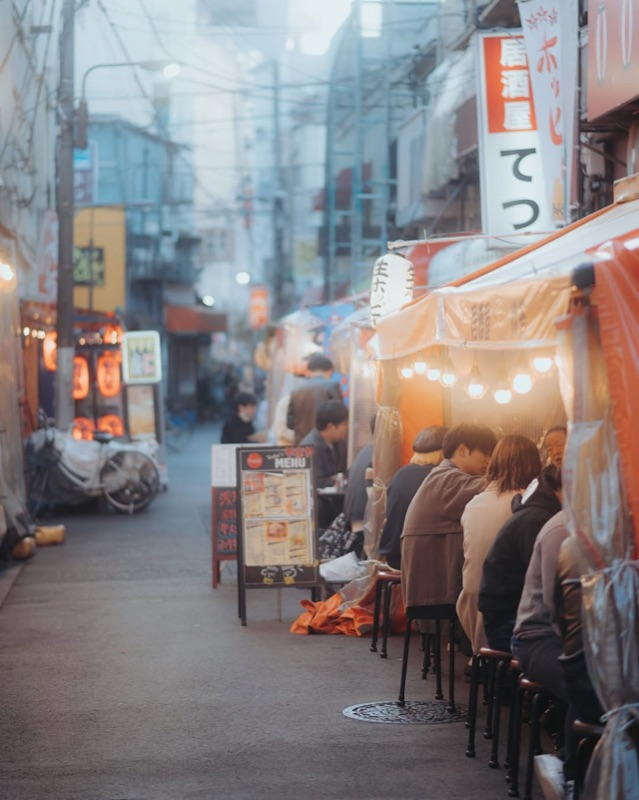
What to order: Hoppy (a beer-like drink) or draft beer with motsu-ni (simmered beef offal), yakitori, and other izakaya classics. The outdoor seating is half the experience.
"Hoppy Street is a must in Asakusa — grab a seat outside, order some motsu-ni and a Hoppy, and people-watch. It's the most atmospheric place to drink in the area."
— r/JapanTravel
tabiji verdict: The perfect way to end an Asakusa day. Grab an outdoor seat at any of the izakayas, order Hoppy (a Tokyo classic), and watch the neighborhood come alive as the sun goes down. Motsu-ni is the signature dish — simmered offal in a sweet miso broth.
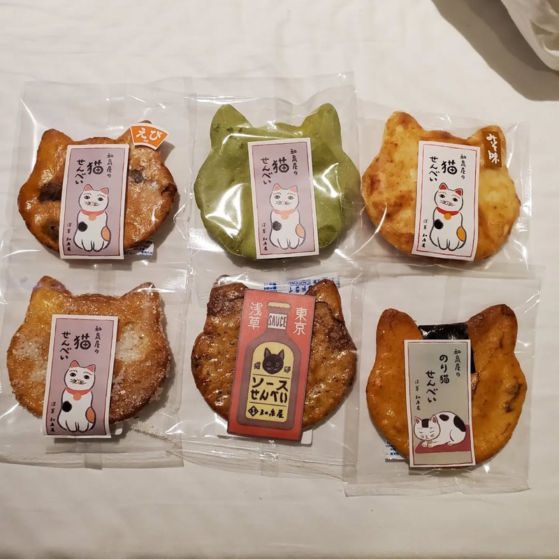
What to order: Freshly grilled senbei (rice crackers) — watch them press and grill them right in front of you. Choose shoyu (soy sauce) or nori (seaweed). The oversized ones are ¥200–¥300.
"The fresh senbei on Nakamise-dori are totally different from the packaged ones. Warm, crunchy, and the soy sauce caramelizes on the surface. Worth every yen."
— r/JapanTravel
tabiji verdict: Don't walk past the senbei stalls — freshly grilled rice crackers are a totally different experience from the packaged kind. Watch them press the rice dough, grill it over charcoal, and brush on soy sauce. ¥100–¥300 and deeply satisfying.
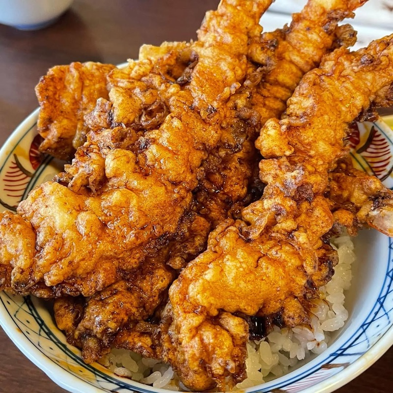
What to order: The tendon (tempura rice bowl) — huge shrimp tempura draped over a bowl of rice, drenched in their dark, sweet tare sauce. It's been the same recipe since 1887.
"Daikokuya is the famous tempura spot in Asakusa. The queue can be brutal on weekends, but they have a secondary location not far away that is way less busy."
— r/JapanTravel · Asakusa Advice thread
tabiji verdict: The iconic Asakusa tempura experience since 1887. The main location has long queues — pro tip: the second branch (Annex) a few doors down has the exact same food with much shorter waits. The shrimp-draped tendon is legendary.
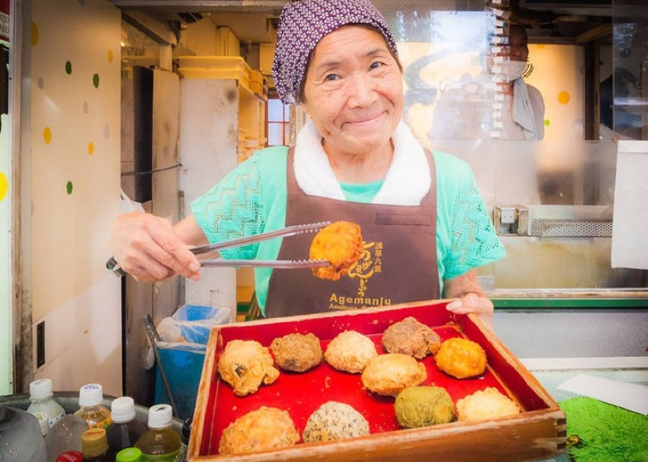
What to order: Age manju — deep-fried sweet buns filled with anko (red bean), matcha, sweet potato, or custard. ¥100–¥200 each. The matcha one is the local favorite.
"The age manju on Nakamise-dori are dangerously addictive. Crispy, sweet, and ¥100 each. I ended up going back three times in one day."
— r/JapanTravel
tabiji verdict: At ¥100 each, these deep-fried sweet buns might be the best value snack in all of Tokyo. Crispy outside, warm anko inside. The matcha and sweet potato flavors are standouts. You will eat more than one.
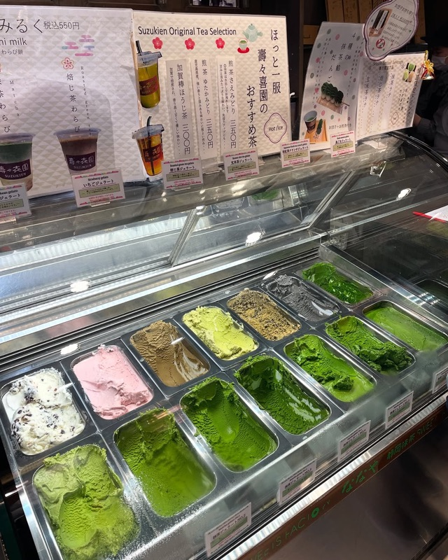
What to order: The world's most intense matcha gelato — choose from 7 levels of matcha concentration. Level 7 is extremely intense and slightly bitter. Most people enjoy Level 4–5. Double scoop with different levels is the move.
"Suzukien has 7 levels of matcha intensity in their gelato. Level 7 is insane — it tastes like drinking pure ceremonial matcha. I did a level 4 and 7 combo and it was perfect."
— r/JapanTravel
tabiji verdict: Famous for having the world's most concentrated matcha gelato (7 levels of intensity). Level 7 uses the most premium matcha available — it's intense, slightly bitter, and incredibly flavorful. Get two different levels to compare. Always a queue, but it moves.
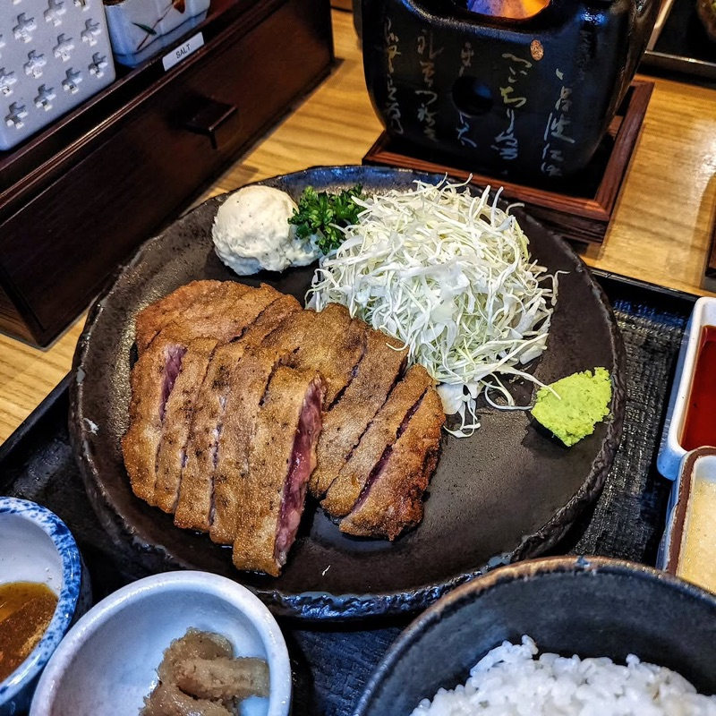
What to order: The gyukatsu set — breaded beef cutlet served rare, with a hot stone to cook it to your preferred doneness. Comes with rice, cabbage, miso soup, and dipping sauces.
"Gyukatsu is one of those uniquely Japanese things you have to try. The beef comes out rare and you cook it on a hot stone at the table — it's interactive and delicious."
— r/JapanTravel
tabiji verdict: Not quite "street food" but too good to leave off. Rare beef cutlet that you cook yourself on a sizzling hot stone. At ¥1,200–¥1,600 it's a splurge, but the experience is worth it. Perfect for a proper meal between snacks.
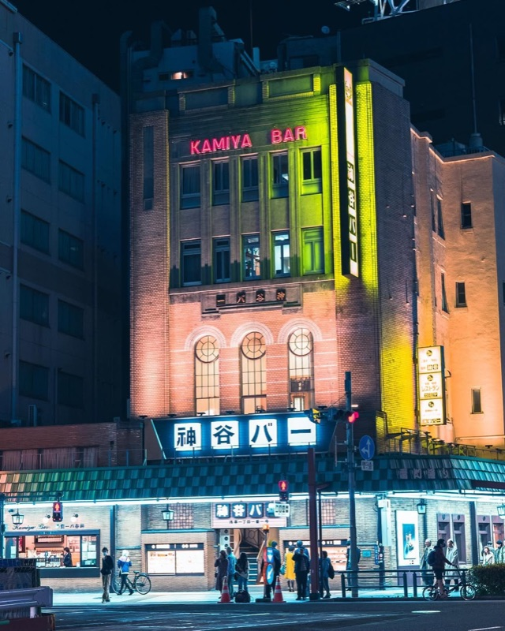
What to order: Denki Bran — their famous "Electric Brandy" cocktail, a secret recipe since 1880. ¥270 for a glass. The bar food (hamburger steak, fried prawns) is classic Showa-era yoshoku.
"Kamiya Bar has been open since 1880 and invented Denki Bran. It's a time capsule — old men drinking at noon, cheap cocktails, and classic Japanese bar food."
— r/Tokyo
tabiji verdict: Tokyo's oldest Western-style bar (since 1880). The Denki Bran is a sweet, potent cocktail that tastes like history. At ¥270 a glass, it might be the cheapest drink in Asakusa. The ground floor is a beer hall; go upstairs for the full restaurant.
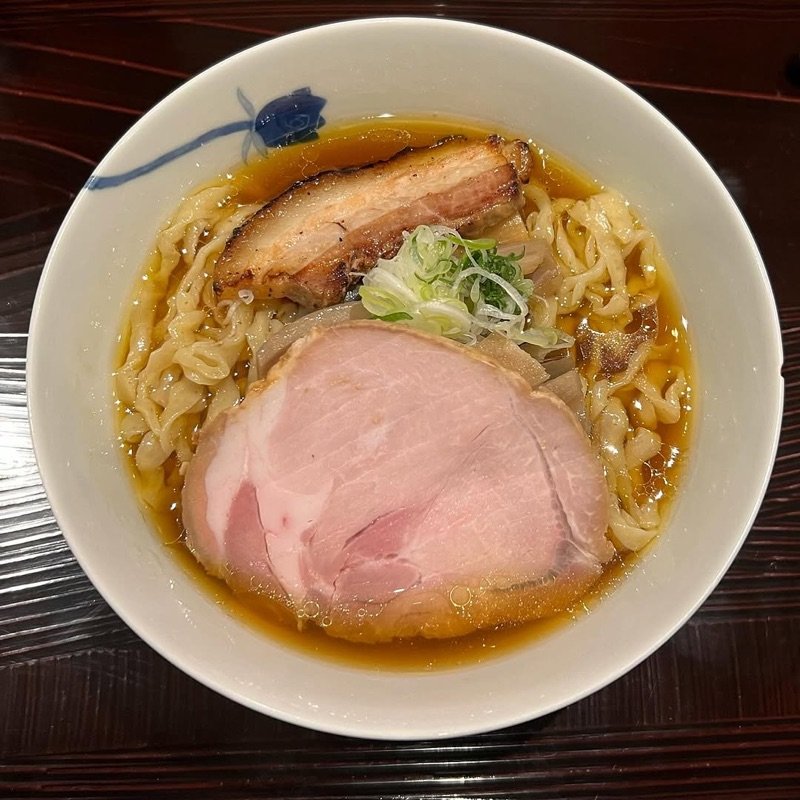
What to order: Their signature ramen — a refined, clear broth with perfectly cooked noodles. Known for being welcoming to international visitors with a printed English menu and a friendly manager who speaks English.
tabiji verdict: One of Asakusa's best ramen shops, with the rare bonus of being genuinely foreigner-friendly. English menu, English-speaking staff, and excellent ramen. When you need a proper bowl after all that street food.
Frequently Asked Questions
What is the best street food in Asakusa?
The most recommended items are: Asakusa Menchi katsu (deep-fried meat patty, ¥300), Kagetsudo melon pan (giant crispy bread, ¥200), Naruto taiyaki (fish-shaped pastry, ¥200), and Candy Apple's candy apples (¥500–¥800). All are cheap, delicious, and quintessentially Asakusa.
Is Nakamise-dori worth visiting?
Yes, but manage expectations — it's a 250-meter shopping street leading to Senso-ji, very touristy and crowded. The food stalls are genuinely good though. Go early (before 10 AM) to beat crowds. The shops behind and around the temple often have better food with fewer people.
How much money do I need for Asakusa street food?
Budget ¥1,500–¥3,000 for a solid grazing session. Most items cost ¥200–¥500. Sample 5–6 snacks for under ¥2,000. Add a sit-down meal (ramen or tempura) for an extra ¥800–¥1,500.
What is Hoppy Street in Asakusa?
Hoppy Street is a lively izakaya alley near Senso-ji with outdoor seating, cheap drinks, and classic izakaya food. Named after Hoppy, a beer-like drink popular since the 1940s. Motsu-ni (simmered offal) is the signature dish. Best in the evening.
Can I eat while walking in Asakusa?
Eating while walking is common and expected on Nakamise-dori and surrounding food streets. In quieter areas, it's better to eat near the stall or find a bench. Most street food is designed to be eaten standing or walking.
When is the best time to visit Asakusa for street food?
Most Nakamise-dori shops open 9–10 AM and close 5–6 PM. Arrive around 10 AM on a weekday for the best experience. Hoppy Street is best from 5 PM onwards. Weekends are extremely crowded — weekdays are significantly better.